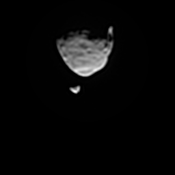
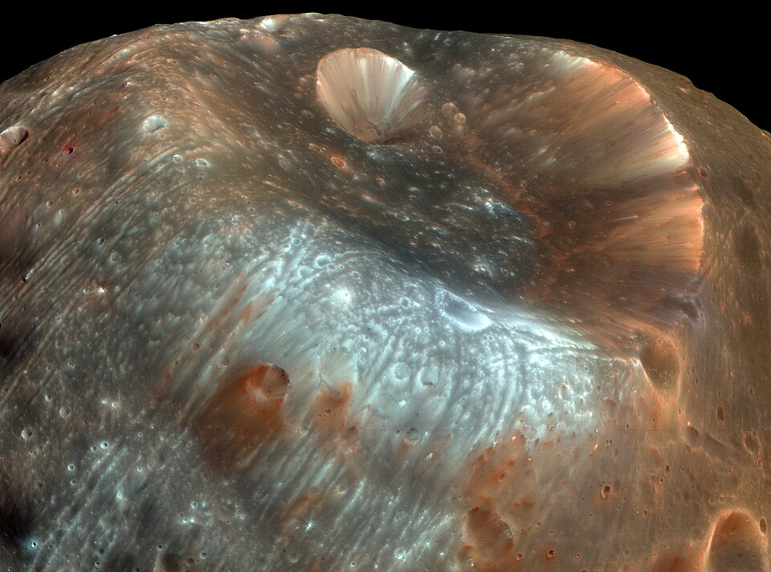

Phobos in false color seen by Mars Reconnaisance Orbiter
Phobos is the bigger of the two moons of Mars.
It orbits closer to Mars with a higher eccentricity and inclination than Deimos.
One notable feature is the Stickney crater, which is half the width of Phobos.
Several "grooves" also appear radiating from one end of Phobos.
It has been the subject of three failed mission by the Soviet Union and later Russia.
However, an upcoming mission by JAXA is expected to launch in 2026 to return samples.
Phobos is named after the Greek son of Ares, personifications of fear.
The name was suggested by the british chemist Henry Madan.

Phobos passing in front of Deimos in real time, seen by Curiosity. Courtesy NASA/JPL-Caltech
Orbit and rotation
Phobos orbits around Mars every 7 hours and 39 minutes.
Its high speed makes it rise from the west on Mars.
It is tidally locked to Mars and is always facing the same side.
It orbits Mars much closer than the Moon does around Earth at 9,376 km.
This makes its apparent size from Mars's surface around a third of that of the Moon from Earth.
Still, transits of Phobos do not obscure the Sun completely.
The eccentricity is 0.02 and the inclination is 1.1°.
The origin of Phobos is still contested.
One theory suggests that the two Martian moons were brought to a Mars orbit from the asteroid belt.
They share the same properties as C (carbonaceous) and D-type (dark) asteroids in terms of albedo and spectra.
However, they both have relatively regular orbits that must have been stabilized by Mars.
Another theory is that they formed from the collision that shaped the Northern Polar Basin on Mars, similar to the Moon's origin.
Several possibilities exist, like coalescing from a Martian ring, or being a surviving piece of that event.

Stickney crater in false color. The smaller Limtoc (top) crater is responsible for the bluish spot along the Stickney rim
Phobos is the bigger of the two Martian moons.
It has a mean radius of 22.1 km, with dimensions of 25.9 km × 22.6 km × 18.3 km.
Phobos has a similar composition to C-type asteroids and is a rocky body rich in carbonaceous material like graphite, carbonates and organic compounds.
Heavier organics are responsible for its low reflectivity (albedo).
Phobos has a low density, high porosity, and is reminiscent of a rubber pile.
The low density also suggests possible ice underneath the regolith surface.
In 1958, Soviet astrophysicist Iosif Shklovsky studied the moon's orbital motion and came to the conclusion that Phobos is a hollow artificial satellite.
Even more absurdly, the model he suggested was that of a sphere 16 km in diameter with a thickness of a few centimeters.
This theory was criticized for errors in the observational data and was later debunked.
Still, modern data show approximately 30% porosity.
Many craters can be observed on the surface of Phobos.
The most prominent of them is the Stickney crater, 9 km in diameter.
The impact that created Stickney likely almost shattered Phobos.
Several grooves radiate from the crater, most likely not a result from the impact as secondary crater chains.
Phobos was explored by most of the missions to Mars, where it was a secondary target.
Other missions that made flybys of Mars for acceleration (or deacceleration) also made close approaches to it, but without studying it.
There were several attempts at dedicated Phobos missions, but so far none were successful.
The last Soviet missions to the Martian system were the unsuccessful Phobos 1 and 2 missions.
They failed after a successful launch.
Phobos 2 managed to reach a Phobos orbit and send back photographs, before it lost communications and failed to deploy a lander and a rover.
After the fall of the Soviet Union, Rosaviacosmos, later Roskosmos, launched the mission Phobos-Grunt in collaboration with China's CNSA, who contributed with the Yinghuo 1 rover.
It was planned to be a sample return mission, but the mission was unsuccessful yet again.
Several rocket burns left the probe in low-Earth orbit and it fell back afterwards.
JAXA's Martian Moons eXploration is a planned Phobos and Deimos sample return mission, expected to launch in 2026.